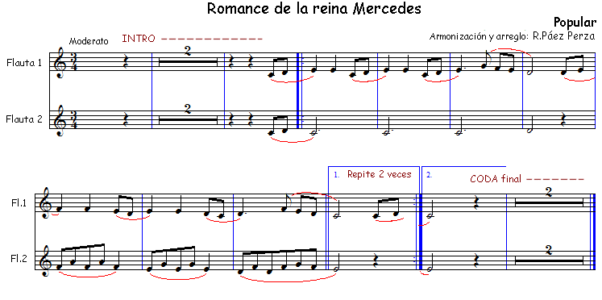
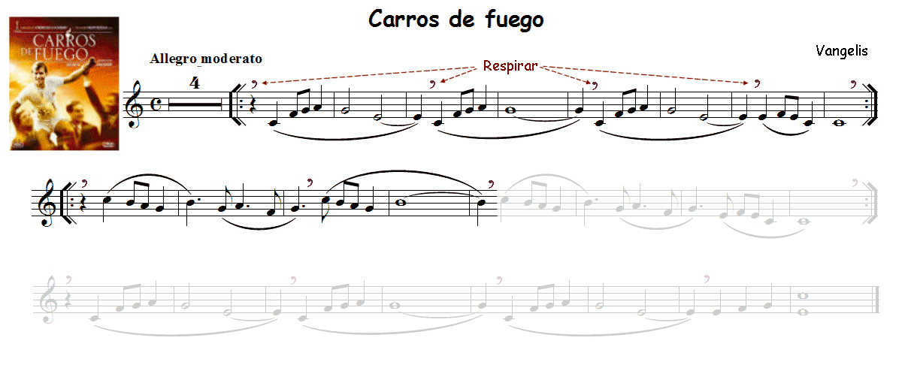
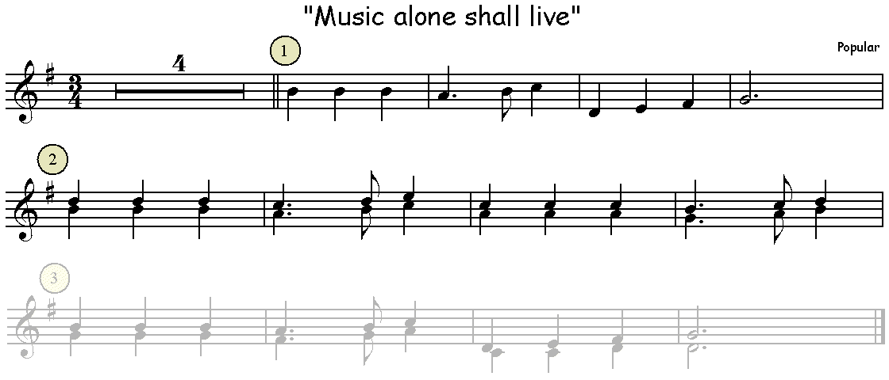
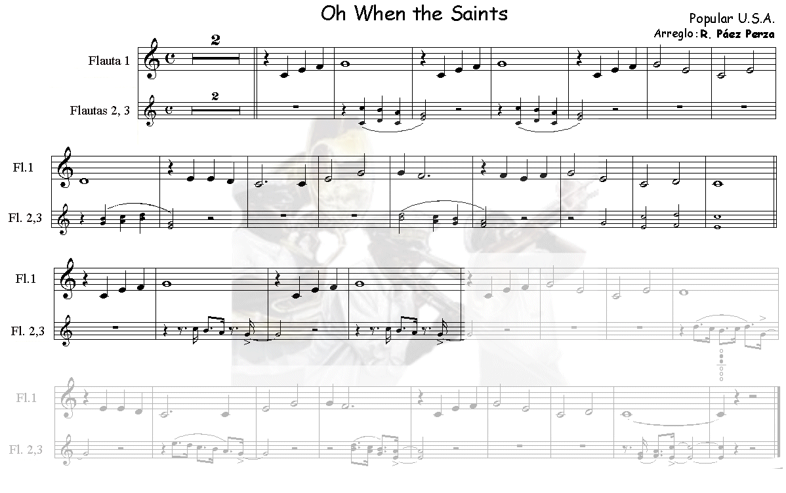
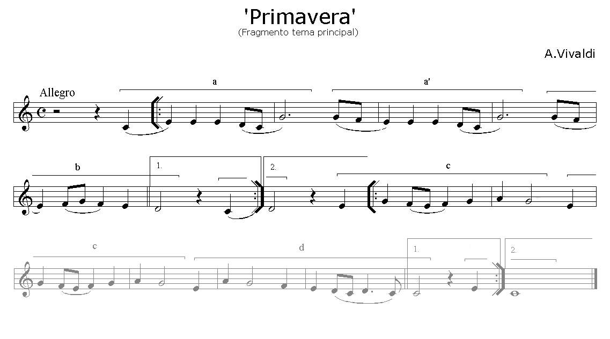
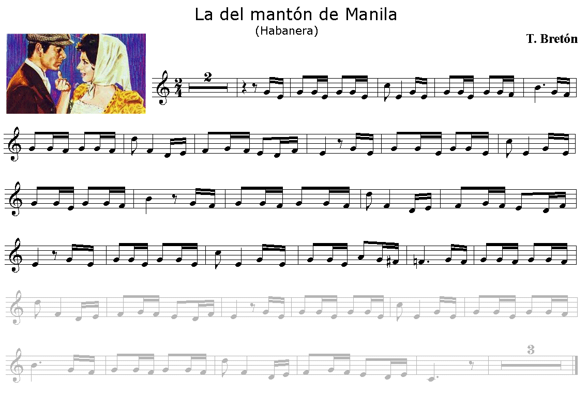
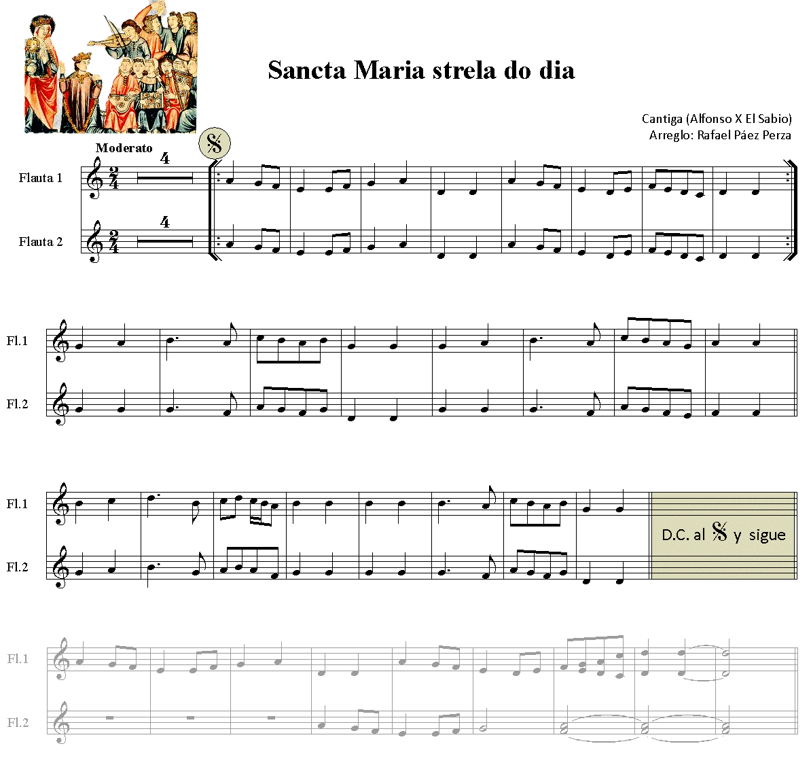

Lección 15.- "Selección de temas y canciones escolares para flauta"
A estas alturas del curso, si todas las lecciones se han practicado correctamente, ya podemos disfrutar de temas melódicos extraídos de diferentes fuentes (folclore, cine, pop, etc.)
Forma de realización
Estudiar primero sin audio.
Una vez aprendido clicar sobre el audio y tocar con él adecuándose al 'tempo' establecido.
Recordar las indicaciones que sobre el estudio instrumental se dieron en la "Introducción" del Módulo I.
1. "Romance de la reina Mercedes"

Arreglo, armonización y edición audio: R. Páez Perza
L_15_RrMercedes.mp3</audio>
Clicar y tocar
Ø
2. "Carros de fuego"

Arreglo, armonización y edición audio: R. Páez Perza
L15_Carros_Fragmento.mp3</audio>
Clicar y tocar
Ø
3. "Music alone shall live"

Arreglo, armonización y edición audio: R. Páez Perza
L15_MusicAlone_Fragmento.mp3</audio>
Clicar y tocar
Ø
4. "Oh! When the Saints"

Arreglo, armonización y edición audio: R. Páez Perza
L15_WhenSaints_Fragmento.mp3</audio>
Clicar y tocar
Ø
5. "Primavera" (Vivaldi)

Arreglo, armonización y edición audio: R. Páez Perza
L15_Primavera_Fragmento.mp3</audio>
Clicar y tocar
6. "La del mantón de Manila" (T. Bretón)

Arreglo y edición audio: R. Páez Perza
L15_Manton_Fragment.mp3</audio>
Clicar y tocar
OBSERVACIONES
Aunque aparentemente parece difícil de realizar con la flauta, en realidad no lo es.
Si duplicamos los valores y cambiamos el compás a 4/4, la lectura de este tema resulta mucho más fácil.
Ø
7. "Sancta Maria strela do dia" (Alfonso X El Sabio)

Arreglo, armonización y edición audio: R. Páez Perza
L15_StªMª_Fragment.mp3</audio>
Clicar y tocar
Ø
Ø
NOTA.- En **www.adarmus.com encontrarás algunos de estos audios de acompañamiento completos.